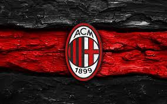

Fue fundado en 1899 como Milan Foot-Ball & Cricket Club por expatriados británicos...
Es uno de los clubes más laureados del mundo, habiendo ganado 7 Ligas de Campeones...
El equipo disputa sus partidos como local en el Estadio Giuseppe Meazza...
Su mayor rival es el Inter de Milán, con quien disputa el Derby della Madonnina...